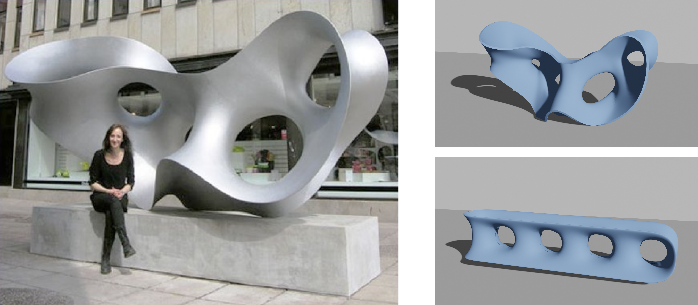
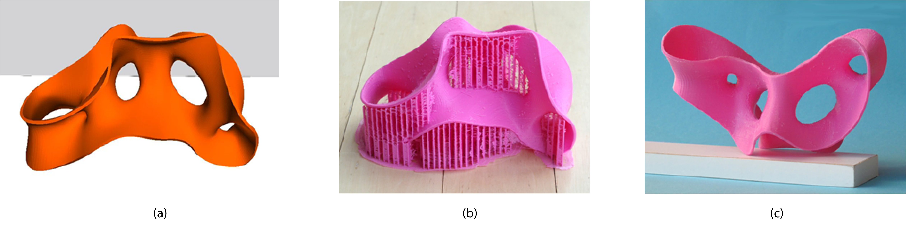
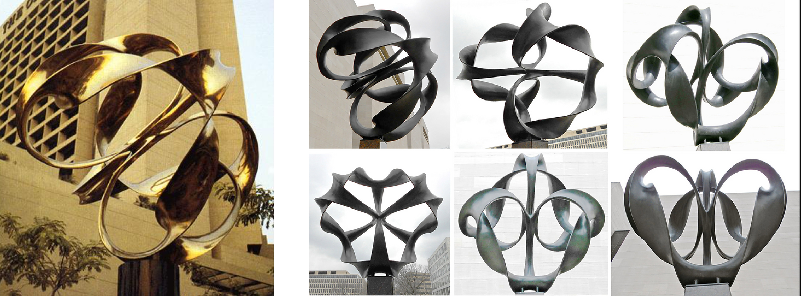
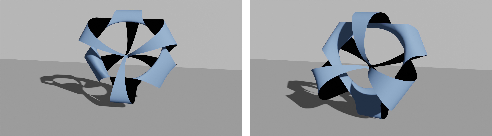
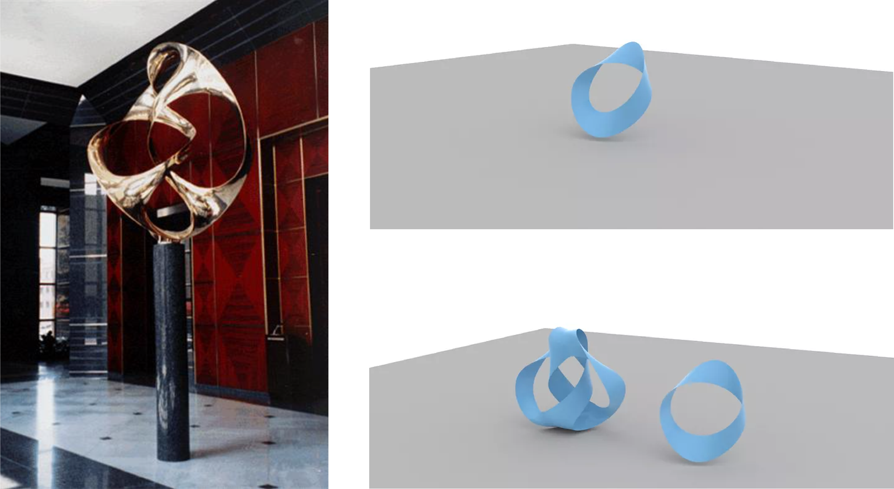
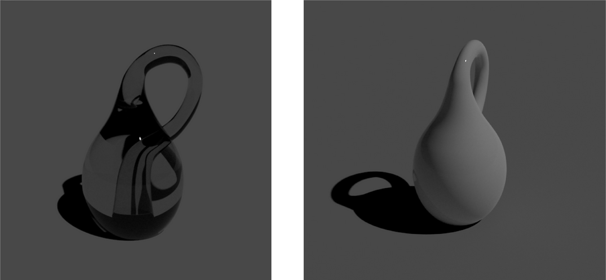

Sculpture Design and Math Models
Abstract
With inspiration from artists, Eva Hild and Charles O.Perry, we aim to clarify and simplify the design process for modeling complex free-form sculptures. During the process, we explored various commercial CAD software and produced different appraoches to model Eva and Charles' sculpture work.
The following meshes are modeled with Autodesk Maya.
The following meshes are modeled with Autodesk Maya.
Eva Hild's Wholly.
Eva Hild is a Swedish artist and sculptor.

Figure: Eva Hild's Wholly and its caputured topology.
 Figure: Modeling "Wholly". (a) CAD model, (b) from 3D printer, (c) cleaned maquette
Charles O. Perry's Continuum II.
Charles O. Perry (1929-2011) was a sculptor, designer, and architect. Contimuum II is located at Marina Center Holdings, Singapore, Singapore.

Figure: Charles O. Perry's Contimuum II.

Figure: Modeling "Contimuum II". Captured topology
Charles O. Perry's Duality.
Another sculpture work from Charles O. Perry. Duality is located at Barnett Center, Jacksonville, FL, USA.

Figure: Charles O. Perry's Duality and its caputured topology.
Costa Minimal Surface.

Klein Bottle.

Figure: Klein Bottle.